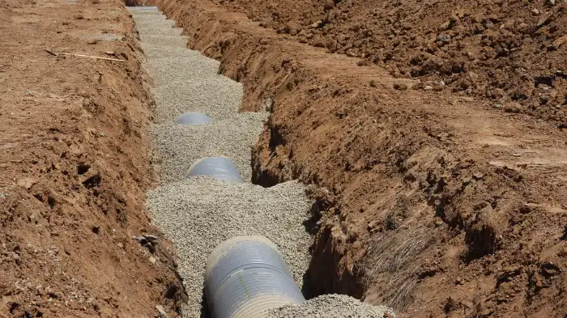

Sewer backup protection
The valve sits in the sewer line and closes when flow reverses.
 Reno Rise
Reno Rise
Basement & Legal Suite Planning
Home Services Basement Renovations Legal Secondary Suites Basement Finishing Underpinning Waterproofing Egress Windows Separate Entrances Soundproofing Basement Flooring Guides Service Areas About Contact Get MatchedA backwater valve helps stop sewage flowing back into your basement in a severe storm. See what drives backwater valve cost, what the City requires and what help exists.
Reno Rise is an independent enquiry and matching service, not a contractor.
Reno Rise helps Toronto homeowners plan basement renovations and legal secondary suites and connect with independent local renovation professionals.
Share your goals, your basement and your timeline using the enquiry form.
We look at what you have shared to understand the scope and what still needs to be confirmed.
Reno Rise matches your project with the contractor best suited to the work, and they take it from there.
During severe storms, sewers can back up. The valve closes so sewage cannot flow back into the house.
The valve sits in the sewer line and closes when flow reverses.
Toronto requires a standalone drain permit. The City says no plans are required for one- and two-unit houses.
The City restricts which valve types are allowed in a building drain or sewer. Your installer should know the rules.
Installing one usually means opening the floor or an exterior excavation to reach the line, then restoring the surface.
Valves need periodic checking so they work when a storm arrives. Ask the installer what upkeep is needed.
A sump pump, downspout disconnection and grading work alongside a backwater valve.
Reno Rise does not publish prices, because they depend on the house. The drivers are:
Compare itemized quotes, and check whether the subsidy below applies before you decide.
Installing a backwater valve typically takes a day when the sewer line is easy to reach, and one to two days when the floor must be opened or an exterior excavation is needed.
Backwater valve installations run into a specific set of avoidable problems:
The City’s backwater valve guidance (updated July 14, 2026) says a standalone drain permit is required, with no plans required for one- and two-unit houses. The subsidy program adds the following (reviewed September 2026):
Source: City of Toronto Basement Flooding Protection Subsidy Program, page updated June 18, 2026 and reviewed September 2026. Program terms change, so confirm them with the City before you buy or install anything.
A standalone drain permit is required in Toronto, applied for through Toronto Building Online Services, and the City inspects before the valve is enclosed. Confirm current steps and fees with the City.
A backwater valve addresses sewer backup, not groundwater seepage. If water comes through walls or floors, look at waterproofing and sump pump options as well.
Reno Rise is focused on Toronto homes. Enquiries from elsewhere in the Greater Toronto Area are welcome too.
“Saved my a$!. Butt lot outstanding service, affordable, and not to mention very quick to get ‘er done!!! They offer all sorts of services, mine was plumbing and they truly saved the day. My heroes. 10/10 would recommend.”
“Amazing work and an outstanding crew. Very professional, energetic, and a pleasure to work with from start to finish. They communicate openly throughout the entire project, show up reliably, and get the job done right.”
Stock photos from Pexels, shown for reference only. They are not Reno Rise projects, and Reno Rise does not install valves.


It depends on access, the valve type, the number of valves, the permit and restoration. Reno Rise does not publish prices. The City subsidy lists up to $1,600 per device (80% of eligible cost), maximum two devices. Get itemized quotes.
Yes. The City requires a standalone drain permit, with no plans required for one- and two-unit houses, and inspects before the valve is enclosed.
Toronto runs a Basement Flooding Protection Subsidy Program with conditions, including disconnected downspouts and a contractor with a valid Toronto business licence. Confirm current terms with the City.
It depends on your home and sewer connection. A backwater valve helps against sewer backup during severe storms. A licensed plumber or the City can advise.
Last reviewed September 2026. General planning information; confirm requirements for your property with Toronto Building and qualified professionals.
Tell us about your basement and your goals. Reno Rise reviews the details and matches your project with the contractor best suited to the work.
Tell us about your basement. Reno Rise reviews your project details and connects you with an appropriate independent professional.